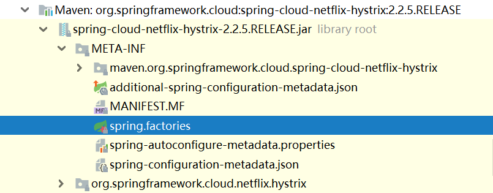
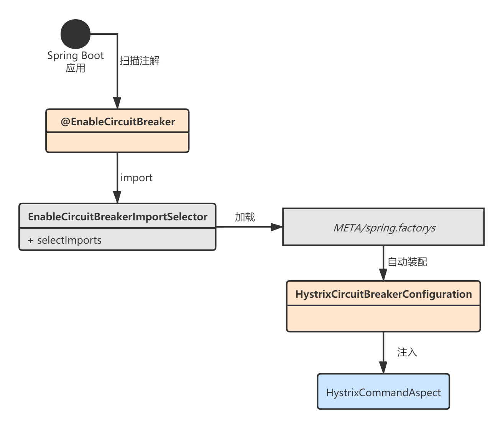
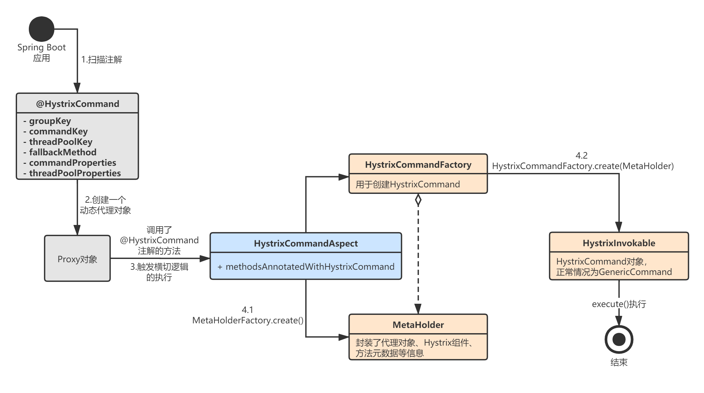

上一章，我讲解了Hystrix整合Feign时的初始化流程。事实上，Spring Cloud Netflix Hystrix是可以单独使用的，本章我就来讲解Hystrix单独使用时的初始化流程。
首先回顾一下，Hystrix独立使用时，一般就是利用@HystrixCommand注解：
@SpringBootApplication
@EnableEurekaClient
@EnableFeignClients
@EnableCircuitBreaker
public class ServiceBApplication {
public static void main(String[] args) {
SpringApplication.run(ServiceBApplication.class, args);
}
}
@Service
public class SomeService {
@HystrixCommand(fallbackMethod = "defaultStores",commandProperties = {
@HystrixProperty(name="execution.isolation.strategy", value="SEMAPHORE")
})
public Object getStores(Map<String, Object> parameters) {
//do stuff that might fail
}
// 降级方法
public Object defaultStores(Map<String, Object> parameters) {
return /* something useful */;
}
}
为什么加个注解就可以完成Hystrix的使用了？经过前面几个Netfilx组件源码的学习，你应该可以立马联想到一定是Spring Cloud针对@HystrixCommand注解的方法所在的类生成了一个动态代理对象。
首先，我们来看看Spring Cloud是如何完成Hystrix的自动装配的。从启动类的@EnableCircuitBreaker注解开始。
Spring Boot应用启动后，扫描到启动类上的@EnableCircuitBreaker注解：
@Target(ElementType.TYPE)
@Retention(RetentionPolicy.RUNTIME)
@Documented
@Inherited
@Import(EnableCircuitBreakerImportSelector.class)
public @interface EnableCircuitBreaker {
}
此时触发EnableCircuitBreakerImportSelector的执行：
@Order(Ordered.LOWEST_PRECEDENCE - 100)
public class EnableCircuitBreakerImportSelector extends SpringFactoryImportSelector<EnableCircuitBreaker> {
@Override
protected boolean isEnabled() {
return getEnvironment().getProperty("spring.cloud.circuit.breaker.enabled",
Boolean.class, Boolean.TRUE);
}
}
真正的执行方法在它的父类SpringFactoryImportSelector<EnableCircuitBreaker>中——selectImports方法。
selectImports的核心功能是扫描注解类，返回需要自动装配的类名称，我们可以在这里自定义查找装配类的逻辑，返回类名称，然后Spring Boot会去自动加载装类。下面方法返回的是EnableCircuitBreaker，也就是说Spring Boot启动后会去spring.factories中找到该类对应的所有自动装配类，并执行：
public abstract class SpringFactoryImportSelector<T>
implements DeferredImportSelector, BeanClassLoaderAware, EnvironmentAware {
@Override
public String[] selectImports(AnnotationMetadata metadata) {
if (!isEnabled()) {
return new String[0];
}
AnnotationAttributes attributes = AnnotationAttributes.fromMap(
metadata.getAnnotationAttributes(this.annotationClass.getName(), true));
Assert.notNull(attributes, "No " + getSimpleName() + " attributes found. Is "
+ metadata.getClassName() + " annotated with @" + getSimpleName() + "?");
// 找到所有auto configuration classes
List<String> factories = new ArrayList<>(new LinkedHashSet<>(SpringFactoriesLoader
.loadFactoryNames(this.annotationClass, this.beanClassLoader)));
//...
return factories.toArray(new String[factories.size()]);
}
}
根据上述的步骤，Spring Boot启动并识别EnableCircuitBreaker后，会读取并加载META-INF/spring.factories文件中的对应装配类：

# spring.factories
org.springframework.boot.autoconfigure.EnableAutoConfiguration=\
org.springframework.cloud.netflix.hystrix.HystrixAutoConfiguration,\
org.springframework.cloud.netflix.hystrix.HystrixCircuitBreakerAutoConfiguration,\
org.springframework.cloud.netflix.hystrix.ReactiveHystrixCircuitBreakerAutoConfiguration,\
org.springframework.cloud.netflix.hystrix.security.HystrixSecurityAutoConfiguration
org.springframework.cloud.client.circuitbreaker.EnableCircuitBreaker=\
org.springframework.cloud.netflix.hystrix.HystrixCircuitBreakerConfiguration
可以看到自动装配类就是HystrixCircuitBreakerConfiguration，我们来看看它内部到底做了什么事情？
HystrixCircuitBreakerConfiguration的核心作用是注入了一个HystrixCommandAspect，这个切面就是用来处理标注了@HystrixCommand的方法的。
@Configuration(proxyBeanMethods = false)
public class HystrixCircuitBreakerConfiguration {
@Bean
public HystrixCommandAspect hystrixCommandAspect() {
return new HystrixCommandAspect();
}
//...
}
至此，真相大白了，我们之所以通过@HystrixCommand注解就能使用Hystrix，是因为Spring Cloud为我们自动注入了一个切面对象，这个切面对象负责处理Hystrix相关的逻辑：

我们再来看看HystirxCommandAspect这个切面，我省略了请求合并相关的代码，整个处理流程我用下面这张图表示：

这里使用Spring提供的AOP功能，用了一个@Around横切面：
@Aspect
public class HystrixCommandAspect {
private static final Map<HystrixPointcutType, MetaHolderFactory> META_HOLDER_FACTORY_MAP;
static {
META_HOLDER_FACTORY_MAP = ImmutableMap.<HystrixPointcutType, MetaHolderFactory>builder()
.put(HystrixPointcutType.COMMAND, new CommandMetaHolderFactory())
.put(HystrixPointcutType.COLLAPSER, new CollapserMetaHolderFactory())
.build();
}
// 定义一个切点，用@HystrixCommand标识
@Pointcut("@annotation(com.netflix.hystrix.contrib.javanica.annotation.HystrixCommand)")
public void hystrixCommandAnnotationPointcut() {
}
// 横切逻辑
@Around("hystrixCommandAnnotationPointcut() || hystrixCollapserAnnotationPointcut()")
public Object methodsAnnotatedWithHystrixCommand(final ProceedingJoinPoint joinPoint) throws Throwable {
// 1. 获取@HystrixCommand标注的方法元数据
Method method = getMethodFromTarget(joinPoint);
//...
// 2.拿到一个CommandMetaHolderFactory
MetaHolderFactory metaHolderFactory = META_HOLDER_FACTORY_MAP
.get(HystrixPointcutType.of(method));
// 3.MetaHolder包含了各种Hystrix相关元数据
MetaHolder metaHolder = metaHolderFactory.create(joinPoint);
// 4.HystrixInvokable包含了创建出来的HystrixCommand对象
HystrixInvokable invokable = HystrixCommandFactory.getInstance().create(metaHolder);
ExecutionType executionType = metaHolder.isCollapserAnnotationPresent() ?
metaHolder.getCollapserExecutionType() : metaHolder.getExecutionType();
Object result;
try {
// 5.执行方法
if (!metaHolder.isObservable()) {
result = CommandExecutor.execute(invokable, executionType, metaHolder);
} else {
result = executeObservable(invokable, executionType, metaHolder);
}
} catch (HystrixBadRequestException e) {
throw e.getCause();
} catch (HystrixRuntimeException e) {
throw hystrixRuntimeExceptionToThrowable(metaHolder, e);
}
return result;
}
//...
}
HystirxCommandAspect这个切面类的核心逻辑如下：
我们再来深入下，看看HystirxCommandAspect内部到底是怎样构造一个HystrixCommand对象的，其实核心就是下面的这两行代码：
// HystrixCommandAspect.java
// 3.MetaHolder包含了各种Hystrix相关元数据
MetaHolder metaHolder = metaHolderFactory.create(joinPoint);
// 4.HystrixInvokable包含了创建出来的HystrixCommand对象
HystrixInvokable invokable = HystrixCommandFactory.getInstance().create(metaHolder);
先来看CommandMetaHolderFactory，它根据AOP的jointPoint信息创建了一个MetaHolder对象：
private static abstract class MetaHolderFactory {
public MetaHolder create(final ProceedingJoinPoint joinPoint) {
// 方法元数据
Method method = getMethodFromTarget(joinPoint);
// 被代理的对象
Object obj = joinPoint.getTarget();
// 入参
Object[] args = joinPoint.getArgs();
// 代理对象自身
Object proxy = joinPoint.getThis();
// 调用子类CommandMetaHolderFactory.create方法
return create(proxy, method, obj, args, joinPoint);
}
}
private static class CommandMetaHolderFactory extends MetaHolderFactory {
@Override
public MetaHolder create(Object proxy, Method method, Object obj, Object[] args, final ProceedingJoinPoint joinPoint) {
HystrixCommand hystrixCommand = method.getAnnotation(HystrixCommand.class);
ExecutionType executionType = ExecutionType.getExecutionType(method.getReturnType());
// 这里创建一个了MetaHolder.Builder对象，顾名思义就是MetaHolder的构建工具类
MetaHolder.Builder builder = metaHolderBuilder(proxy, method, obj, args, joinPoint);
if (isCompileWeaving()) {
builder.ajcMethod(getAjcMethodFromTarget(joinPoint));
}
// 设置MetaHolder.Builder的各种属性
return builder.defaultCommandKey(method.getName())
.hystrixCommand(hystrixCommand)
.observableExecutionMode(hystrixCommand.observableExecutionMode())
.executionType(executionType)
.observable(ExecutionType.OBSERVABLE == executionType)
.build();
}
}
我们重点关注最后一行，MetaHolder.Builder这个对象内部包含了各种各样的元数据信息，这样后面Hystrix执行时就可以知道代理对象的所有信息：
// MetaHolder.java
public static final class Builder {
private static final Class<?>[] EMPTY_ARRAY_OF_TYPES= new Class[0];
private HystrixCollapser hystrixCollapser;
private HystrixCommand hystrixCommand;
private DefaultProperties defaultProperties;
private Method method;
private Method cacheKeyMethod;
private Method fallbackMethod;
private Method ajcMethod;
private Object obj;
private Object proxyObj;
private Closure closure;
private Object[] args;
private String defaultGroupKey;
// 方法名称作为commandKey
private String defaultCommandKey;
private String defaultCollapserKey;
private String defaultThreadPoolKey;
private ExecutionType executionType;
private ExecutionType collapserExecutionType;
private ExecutionType fallbackExecutionType;
private boolean extendedFallback;
private boolean fallback;
private boolean extendedParentFallback;
private boolean defaultFallback;
private boolean observable;
// JoinPoint信息
private JoinPoint joinPoint;
private ObservableExecutionMode observableExecutionMode;
//...
}
有了MetaHolder之后，就可以用它来创建HystrixCommand对象了：
HystrixInvokable invokable = HystrixCommandFactory.getInstance().create(metaHolder);
这里用到了HystrixCommandFactory，顾名思义就是创建HystrixCommand的工厂类：
// HystrixCommandFactory.java
public HystrixInvokable create(MetaHolder metaHolder) {
HystrixInvokable executable;
// 根据不同的元数据，创建不同类型的HystrixCommand对象
if (metaHolder.isCollapserAnnotationPresent()) {
executable = new CommandCollapser(metaHolder);
} else if (metaHolder.isObservable()) {
executable = new GenericObservableCommand(HystrixCommandBuilderFactory.getInstance().create(metaHolder));
} else {
executable = new GenericCommand(HystrixCommandBuilderFactory.getInstance().create(metaHolder));
}
return executable;
}
HystrixCommandFactory内部会根据MetaHolder的信息，创建不同的HystrixCommand对象，一般都是走最后的else分支，也就是创建了一个GenericCommand对象，这个对象内部保存了一个HystrixCommandBuilder：
executable = new GenericCommand(HystrixCommandBuilderFactory.getInstance().create(metaHolder));
我们来看下HystrixCommandBuilder的构建逻辑，这是在HystrixCommandBuilderFactory内部完成的，返回一个HystrixCommandBuilder：
// HystrixCommandBuilderFactory.java
public <ResponseType> HystrixCommandBuilder create(MetaHolder metaHolder, Collection<HystrixCollapser.CollapsedRequest<ResponseType, Object>> collapsedRequests) {
// 1.校验
validateMetaHolder(metaHolder);
// 2.创建一个HystrixCommandBuilder
return HystrixCommandBuilder.builder()
.setterBuilder(createGenericSetterBuilder(metaHolder))
.commandActions(createCommandActions(metaHolder))
.collapsedRequests(collapsedRequests)
.cacheResultInvocationContext(createCacheResultInvocationContext(metaHolder))
.cacheRemoveInvocationContext(createCacheRemoveInvocationContext(metaHolder))
.ignoreExceptions(metaHolder.getCommandIgnoreExceptions())
.executionType(metaHolder.getExecutionType())
.build();
}
// 设置HystrixCommand的各种数据
private GenericSetterBuilder createGenericSetterBuilder(MetaHolder metaHolder) {
GenericSetterBuilder.Builder setterBuilder = GenericSetterBuilder.builder()
.groupKey(metaHolder.getCommandGroupKey())
.threadPoolKey(metaHolder.getThreadPoolKey())
.commandKey(metaHolder.getCommandKey())
.collapserKey(metaHolder.getCollapserKey())
.commandProperties(metaHolder.getCommandProperties())
.threadPoolProperties(metaHolder.getThreadPoolProperties())
.collapserProperties(metaHolder.getCollapserProperties());
if (metaHolder.isCollapserAnnotationPresent()) {
setterBuilder.scope(metaHolder.getHystrixCollapser().scope());
}
return setterBuilder.build();
}
// 创建CommandActions，包含了HystrixCommand执行流程
private CommandActions createCommandActions(MetaHolder metaHolder) {
// 创建一个正常执行流程的CommandAction
CommandAction commandAction = createCommandAction(metaHolder);
// 创建一个降级执行流程的CommandAction
CommandAction fallbackAction = createFallbackAction(metaHolder);
return CommandActions.builder().commandAction(commandAction)
.fallbackAction(fallbackAction).build();
}
// 创建正常执行流程的CommandAction
private CommandAction createCommandAction(MetaHolder metaHolder) {
// 返回一个MethodExecutionAction，内部仅仅就是设置了一下属性值
return new MethodExecutionAction(metaHolder.getObj(), metaHolder.getMethod(),
metaHolder.getArgs(), metaHolder);
}
// 创建降级执行流程的CommandAction
private CommandAction createFallbackAction(MetaHolder metaHolder) {
// 解析降级方法元数据
FallbackMethod fallbackMethod = MethodProvider.getInstance()
.getFallbackMethod(metaHolder.getObj().getClass(), metaHolder.getMethod(),
metaHolder.isExtendedFallback());
// 校验
fallbackMethod.validateReturnType(metaHolder.getMethod());
CommandAction fallbackAction = null;
if (fallbackMethod.isPresent()) {
Method fMethod = fallbackMethod.getMethod();
Object[] args = fallbackMethod.isDefault() ? new Object[0] : metaHolder.getArgs();
if (fallbackMethod.isCommand()) {
//...
fallbackAction = new LazyCommandExecutionAction(fmMetaHolder);
} else {
//...
fallbackAction = new MethodExecutionAction(fmMetaHolder.getObj(), fMethod,
fmMetaHolder.getArgs(), fmMetaHolder);
}
}
return fallbackAction;
}
重点关注createGenericSetterBuilder和createCommandActions方法：
最后，我们来看构造出来的GenericCommand是长什么样的：
public class GenericCommand extends AbstractHystrixCommand<Object> {
public GenericCommand(HystrixCommandBuilder builder) {
super(builder);
}
// 当执行GenericCommand.execute()时，这个方法会被自动调用
@Override
protected Object run() throws Exception {
LOGGER.debug("execute command: {}", getCommandKey().name());
return process(new Action() {
@Override
Object execute() {
// CommandAction包含正常的处理流程
return getCommandAction().execute(getExecutionType());
}
});
}
// 降级逻辑
@Override
protected Object getFallback() {
// FallbackAction包含降级处理流程
final CommandAction commandAction = getFallbackAction();
if (commandAction != null) {
try {
return process(new Action() {
@Override
Object execute() {
MetaHolder metaHolder = commandAction.getMetaHolder();
Object[] args = createArgsForFallback(metaHolder, getExecutionException());
return commandAction.executeWithArgs(metaHolder.getFallbackExecutionType(), args);
}
});
} catch (Throwable e) {
LOGGER.error(FallbackErrorMessageBuilder.create()
.append(commandAction, e).build());
throw new FallbackInvocationException(unwrapCause(e));
}
} else {
return super.getFallback();
}
}
}
GenericCommand就是AbstractHystrixCommand的子类，它的run()方法里面封装了正常的业务处理流程逻辑，getFallback()方法里封装了降级逻辑。
至此，整个HystirxCommandAspect的核心原理就分析完了，我来总结一下它的核心逻辑：
HystirxCommandAspect.methodsAnnotatedWithHystrixCommand()方法的执行；本章，我详细分析了在Spring Cloud中使用原生Hystrix时的初始化流程。这个流程的本质就是通过Spring AOP创建代理类，然后在AOP横切逻辑中封装动态创建HystrixCommand的代理，并触发Command的执行，整合的思路和上一章Feign集成的思路是类似的。
从下一章开始，我就会分析Hystrix调用的底层原理，由于Hystrix大量使用了RxJava这个响应式框架，所以整个分析流程我不会像分析Eureka、Ribbon、Feign那样按照调用流程去分析（也没办法那样做）。所以，我会忽略掉RxJava的各种使用，直接讲解Hystrix自身最核心的处理逻辑。